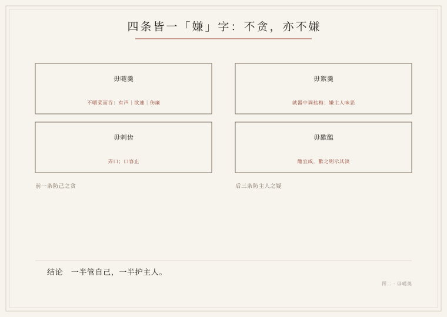

曲礼上 · 一·七十一 · 第 69 课
四件事不许做：不嚼菜连汤吞；在器里添盐梅调味；剔牙；喝肉酱。四条都关「味」：不显得贪，也不显得嫌。
说什么事：毋嚃羹，毋絮羹，毋剌齿，毋歠醢。
落在哪一层：仪。上节戒分与时，此节戒味。
为何编在此位：一·七十一（课 68）讲器之宜，此节讲味之宜；器的道理既明，乃及味的道理。
【经】毋嚃羹，毋絮羹，毋剌齒，毋歠醢。
【注】亦嫌欲疾也。嚃，為不嚼菜。為其詳於味也。絮猶調也。為其弄口也。口容止。亦嫌詳於味也。歠者為其淡故。
毋嚃羹 注「亦嫌欲疾也。嚃，为不嚼菜」。疏：「人若不嚼菜，含而歠吞之，其欲速而多，又有声，不敬，伤廉也。」羹有菜者用梜，故不得歠。
毋絮羹 注「为其详于味也。絮犹调也」。疏：「絮谓就食器中调和盐梅也。若得主人羹，更于器中调和，是嫌主人食味恶也。」
毋剌齿 注「为其弄口也。口容止」。疏引《少仪》「口容止」，谓容仪欲静止。
毋歠醢 注「亦嫌详于味也。歠者为其淡故」。疏：「醢，肉酱也。酱宜咸，客若歠之，则是酱淡也。」
不要连菜带汤一口吞下；不要在器里添盐梅调味；不要剔牙；不要喝肉酱。
四条戒，皆在一个「嫌」字：嚃羹嫌贪，絮羹嫌主人味恶，剌齿嫌弄口，歠醢嫌酱淡。前一条防己之贪，后三条防主人之疑。食桌上的礼，一半管自己，一半护主人。
第一层 嚃与歠之别 羹有菜，须以梜取菜、嚼而后饮；含而吞之，是「嚃」。疏说得实：一则有声，二则欲速而多。此条与「流歠」相近而不同：流歠是饮汁太急，嚃是菜不嚼。
第二层 絮羹之嫌 在主人器里调盐梅，等于说「你这羹味不对」。注用「详于味」三字：太讲究味道，便是不满。礼禁的不是调味，是在主人器里调味。
第三层 剌齿之弄口 「口容止」三字是总则：口不当有动作。剔牙是小动作，然在人前即是「弄」。
第四层 歠醢之嫌淡 醢宜咸，歠之则示其淡。此条与絮羹对：一嫌淡（歠），一嫌淡而调（絮）。两条都指向同一件事：不让主人觉得自己的味道不足。
与今日何干 今人喝汤出声、在别人的菜里加酱油、饭桌上剔牙、端起酱碟舔，仍是四样。此节可当一面镜。
| 左 | 右 |
|---|---|
| 毋嚃羹 | 不嚼菜而吞，有声、欲速、伤廉 |
| 毋絮羹 | 就器中调盐梅，嫌主人味恶 |
| 毋剌齿 | 弄口；口容止 |
| 毋歠醢 | 醢宜咸，歠之则示其淡 |
| 一「嫌」字 | 前防己贪，后防主人之疑 |
画案上一只羹器，器中菜叶完整、浮在汤面，汤面平静无涡；器旁一只小碟盛盐梅，碟中未动；再旁一只小盂（漱器），盂上有布巾半覆。三器并置。不画手、不画人、不写文字。赭色只在羹器双耳与盐梅碟沿。
